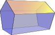
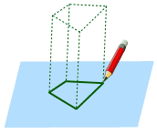
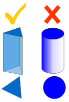
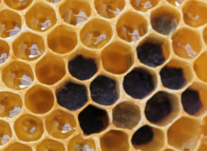
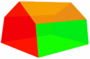
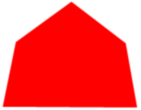
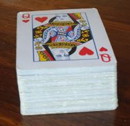
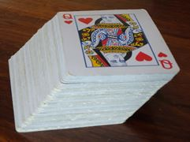

Prisms
Go to Surface Area or Volume.

A prism is a solid object with:
- identical ends
- flat faces
- and the same cross section all along its length !
A cross section is the shape made by cutting straight across an object.

The cross section of this object is a triangle ...
.. it has the same cross section all along its length ...
... so it's a triangular prism.
|
Try drawing a shape on a piece of Then imagine it extending up from the sheet of paper ... |
 |

No Curves!
A prism is a polyhedron, which means all faces are flat!
No curved sides.
For example, a cylinder isn't a prism, because it has curved sides.
Bases

The ends of a prism are parallel
and each one is called a base.
Sides

The side faces of a prism are parallelograms
(4-sided shapes with opposite sides parallel)
These are all Prisms:
| |
|
| Square Prism: | Cross-Section: |
 |
 |
| |
|
| Cube: | Cross-Section: |
 |
|
| (yes, a cube is a prism, because it is a square all along its length) (Also see Rectangular Prisms ) |
|
| |
|
| Triangular Prism: | Cross-Section: |
 |
 |
| |
|
| Pentagonal Prism: | Cross-Section: |
 |
|
| |
|
and more!

Example: Honeycomb
Bees store honey in hexagonal prisms.
The ends are hexagons and the 6 sides are rectangles.

Example: This hexagonal ice crystal.
It looks like a hexagon, but because it has some thickness it is actually a hexagonal prism!
Photograph by NASA / Alexey Kljatov.
Regular vs Irregular Prisms
All the previous examples are Regular Prisms, because the cross section is regular (in other words it is a shape with equal edge lengths, and equal angles.)
Here's an example of an Irregular Prism:
| Irregular Pentagonal Prism: | ||
 |
 |
|
| Cross-Section | ||
| It is "irregular" because the cross-section isn't "regular" in shape. |
||
Right vs Oblique Prism
When the two ends are perfectly aligned it is a Right Prism otherwise it is an Oblique Prism:

Surface Area of a Prism

+ Base Perimeter × Length
Example: What's the surface area of a prism where the base area is 25 m2, the base perimeter is 24 m, and the length is 12 m:
(Note: we have an Area Calculation Tool)
Volume of a Prism
The volume of a prism is the base area times the height at right angles to the base.

Volume = Base Area × Height
Example: What's the volume of a prism where the base area is 25 m2 and which is 12 m high:

For a right prism, the height and the length are the same.
Play with it below. The formula also works when it "leans over" (oblique) but remember that the height is at right angles to the base:
And this is why:


The stack can lean over, but still has the same volume
More About The Side Faces

The side faces of a prism are parallelograms (4-sided shape with opposites sides parallel)
A prism can lean to one side, making it an oblique prism, but the two ends are still parallel, and the side faces are still parallelograms!
But if the two ends are not parallel it is not a prism.